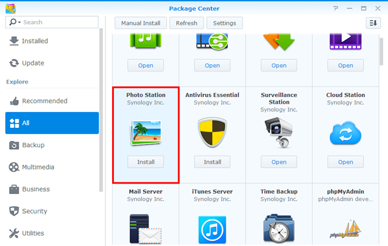

Přehled
Photo Station je webová aplikace určená jako pomůcka při organizování a zobrazování fotografií uložených v zařízení Synology NAS přes internet. Díky odladěnému a uživatelsky příjemnému rozhraní stačí ve službě Photo Station k odesílaní, procházení, správě a sdílení fotoalb jen pár kliknutí.
1. Instalace služby Photo Station
Chcete-li nainstalovat službu Photo Station, přejděte do Centra balíčků, vyhledejte balíček Photo Station a poté klikněte na možnost Instalovat.
2. Odeslat fotografie
Než začnete procházet a spravovat fotografie ve službě Photo Station, musíte nejprve některým z následujících způsobů vytvořit alba a odeslat fotografie.
2.1 Odeslání fotografií pomocí aplikace Synology Photo Station Uploader (k dispozici pro systémy Windows a Mac)
Použití aplikace Synology Photo Station Uploader doporučujeme kvůli tomu, že se v průběhu procesu odesílání vytvoří miniatury jednotlivých fotografií. Pokud odešlete soubory pomocí aplikace Synology Photo Station Uploader, urychlíte převod využitím výpočetního výkonu svého počítače.
- Stáhněte a nainstalujte aplikaci Synology Photo Station Uploader (dostupná v Centru pro stahování společnosti Synology).
- V počítači klikněte na fotografie, které chcete odeslat, a výběrem možnosti Odeslat do Photo Station > Vytvořit nový profil otevřete průvodce.
- Zadejte libovolný název a název serveru nebo IP adresu cílového zařízení Synology NAS pro nový profil.
- Zvolte, zda chcete fotky odeslat do služby Photo Station nebo Osobní Photo Station.
- Zadejte přihlašovací údaje pro cílové zařízení Synology NAS.
- Kliknutím na možnost Procházet vyberte cílovou složku nebo vytvořte podsložku ve sdílené složce photo.
- Po dokončení odesílání můžete v zařízení Synology NAS spustit službu Photo Station a zde si prohlížet odeslané soubory v různých režimech, případně upravovat další informace, například vlastnosti alb a přístupová oprávnění.

Zadané informace o serveru a přihlašovací údaje pro tento profil se uloží, aby je bylo možné využít v budoucnu. Je možné založit několik profilů podle různých pravidel nebo cílů. Takže příště místo toho, abyste do aplikace Synology Photo Station Uploader opět zadávali informace o serveru, můžete vybrat stávající profil, použít dříve zadaná nastavení a odeslat fotky do stejného cíle.

2.2 Vytváření alb a odesílání fotografií pomocí služby Photo Station
Spusťte službu Photo Station a kliknutím na možnost Přidat vytvořte nové album nebo do již existujících alb odešlete fotografie z počítače nebo ze zařízení Synology NAS.

Pokud upřednostňujete odesílání fotografií prostřednictvím rozhraní služby Photo Station, důrazně doporučujeme povolit službu QuickConnect. Ať už jste doma nebo na cestách, služba QuickConnect vám povolí přístup k zařízení Synology NAS a službě Photo Station odkudkoli prostřednictvím internetu, pomocí vlastního ID a bez nutnosti nastavovat složité síťové konfigurace, například pravidla pro předávání portů. Další informace o službě QuickConnect se nacházejí v tomto návodu.
3. Sdílení fotografií
Pomocí funkce sdílení můžete jednoduše sdílet fotografie uložené ve službě Photo Station s přáteli nebo odesílat fotografie do oblíbených sociálních sítí, například Facebook, Picasa a Flickr.
3.1 Veřejné sdílení fotografií
- Přejděte do alba a vyberte fotografie, které chcete sdílet.
- Kliknutím na možnost Sdílet > Sdílet veřejně získáte odkaz.
- Pokud jste vybrali ke sdílení pouze jednu fotografii, přidá se fotografie do výchozího sdíleného alba s názvem Sdílené fotografie. Zde je možné spravovat všechny fotografie, které jste sdíleli, jednu po druhé.
- Pokud jste ke sdílení vybrali více fotografií, seskupí se fotografie do nového sdíleného alba.
- Také můžete kliknout na možnost Sdílet > Přidat do sdíleného alba a přidat fotografie do nějakého stávajícího sdíleného alba (je-li k dispozici).
- Zadejte název nového sdíleného alba a v případě potřeby zadejte dobu jeho platnosti.
- Chcete-li vybrané fotografie s kýmkoliv sdílet, zkopírujte odkaz a vložte ho do e-mailů, do okamžitých zpráv nebo na webové stránky.

- Ke všem sdíleným fotografiím má veřejný přístup kdokoliv s tímto odkazem.
- V části Nastavení > Sdílení můžete stanovit, kteří uživatelé mají oprávnění sdílet položky ve službě Photo Station veřejně.
3.2 Sdílení fotografií do sociálních sítí
- Vyberte fotografie, které chcete odeslat, a poté vyberte možnost Sdílení > Odeslat na [weby sociálních sítí].
- V zobrazeném okně klikněte na možnost Připojit k webu [sociální síť] a přihlaste se pomocí účtu sociální sítě. Fotografie můžete odeslat do nového nebo do stávajícího alba.

4. Organizace a procházení fotografií na mobilních zařízeních
Chcete-li se připojit ke službě Photo Station nebo odesílat fotografie prostřednictvím mobilních zařízení, můžete pomocí následujících QR kódů nainstalovat do svých mobilních zařízení aplikaci DS photo.